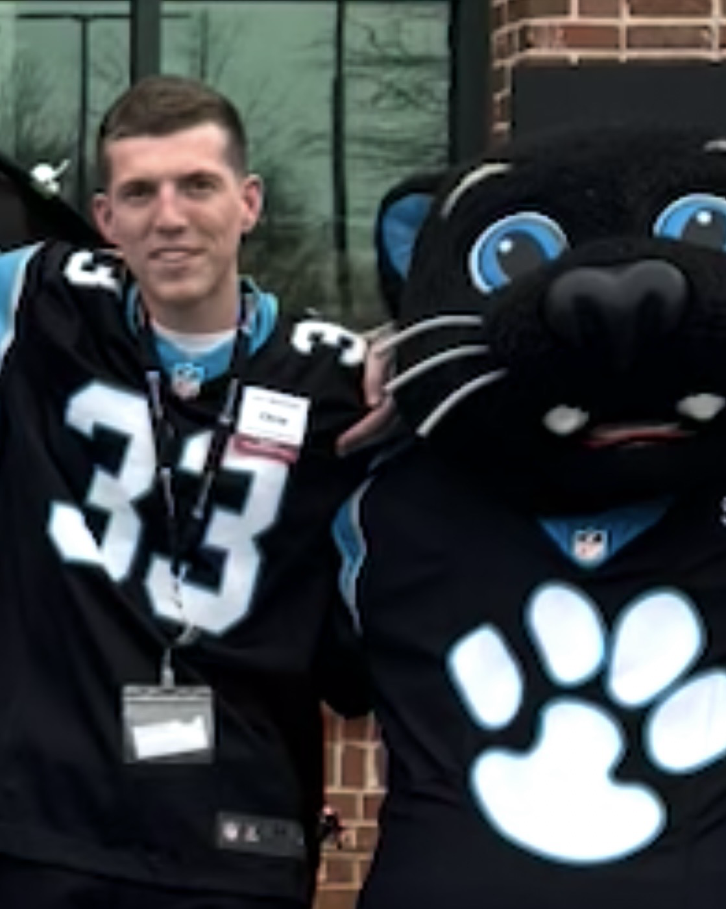

Chris McFarland | Courageous Mink

Me and Sir Purr trying to will the Panthers to a playoff victory last week
I am a senior at UNCC, majoring in accounting, and looking forward to starting a one-year Master's of Accountancy degree in the spring. Some activities I enjoy include playing tennis and football, doing yardwork, and whatever phase I am currently going through (right now it’s chess). Most importantly, even though I’m a pretty Type-A person, I love being silly and making people laugh.
- Personal Background: I grew up in Charlotte with my twin brother (fraternal) and my big sister. As a kid, I was heavily involved in junior tennis. Some of my favorite memories include the family vacations to the beach and sledding in the snow (when we used to get snow).
- Professional Background: I’ve worked part-time at a grocery store for 4.5 years. While gaining an education, I found a love for accounting and will work as a financial auditor starting in 2027 at a public accounting firm.
- Academic Background: My major is accounting. I originally thought I was going to do finance, but I found accounting to be right up my alley during my second year in college.
- Primary Computer: Mac OS laptop.
- Courses I’m Taking, & Why:
- ITSC 1110 - Intro to Computer Science: I want to increase my computer literacy and learn how software engineers think, so I can become a more well-rounded financial auditor.
- ACCT 3350 - Introduction to Auditing: Required course that will give me a taste of what financial auditing actually looks like.
- ACCT 3330 - Managerial Accounting: Required course that will teach me the similarities and differences between internal and external accounting.
- MGMT 3280 - Strategic Management: Required capstone course that will further develop my teamwork skills before I enter the workforce.
- Funny/Interesting Item to Remember Me by: I have a twin (fraternal) brother.
- I’d Also Like to Share: I like to read before bed.
"The future is not something we enter. It is something we create."
— Leonard I. Sweet
My initial prompt:
"Make the following summary of me into a main element of a webpage with an initial summary and then each topic as a list item and the courses part of a numbered list within the bulleted list. Center the image caption under where the image will be and make it italic. Make my name divider animal an h3."
[Gave a copy of my intro]
Follow-up prompt: >>> Switched to Pro Mode 🚀
"I still don't see the the h3 tag for my name and my mascot, "Courageous Mink" to go in. I also don't see the img tag where my picture will go below the h3. Create these tags and fill with necessary content."